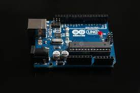

Post #1 - O QUE É ARDUINO?
Arduino é uma plataforma de prototipagem eletrônica de hardware livre e de placa única,projetada com um microcontrolador Atmel AVR com suporte de entrada/saída embutido, uma linguagem de programação padrão, a qual tem origem em Wiring, e é essencialmente C/C++. O objetivo do projeto é criar ferramentas que são acessíveis, com baixo custo, flexíveis e fáceis de se usar por principiantes e profissionais. Principalmente para aqueles que não teriam alcance aos controladores mais sofisticados e ferramentas mais complicadas. Pode ser usado para o desenvolvimento de objetos interativos independentes, ou ainda para ser conectado a um computador hospedeiro. Uma típica placa Arduino é composta por um controlador, algumas linhas de E/S digital e analógica, além de uma interface serial ou USB, para interligar-se ao hospedeiro, que é usado para programá-la e interagi-la em tempo real. A placa em si não possui qualquer recurso de rede, porém é comum combinar um ou mais Arduinos deste modo, usando extensões apropriadas chamadas de shields. A interface do hospedeiro é simples, podendo ser escrita em várias linguagens. A mais popular é a Processing, mas outras que podem comunicar-se com a conexão serial são: Max/MSP, Pure Data, SuperCollider, ActionScript e Java. Em 2010 foi realizado um documentário sobre a plataforma chamado Arduino: The Documentary.